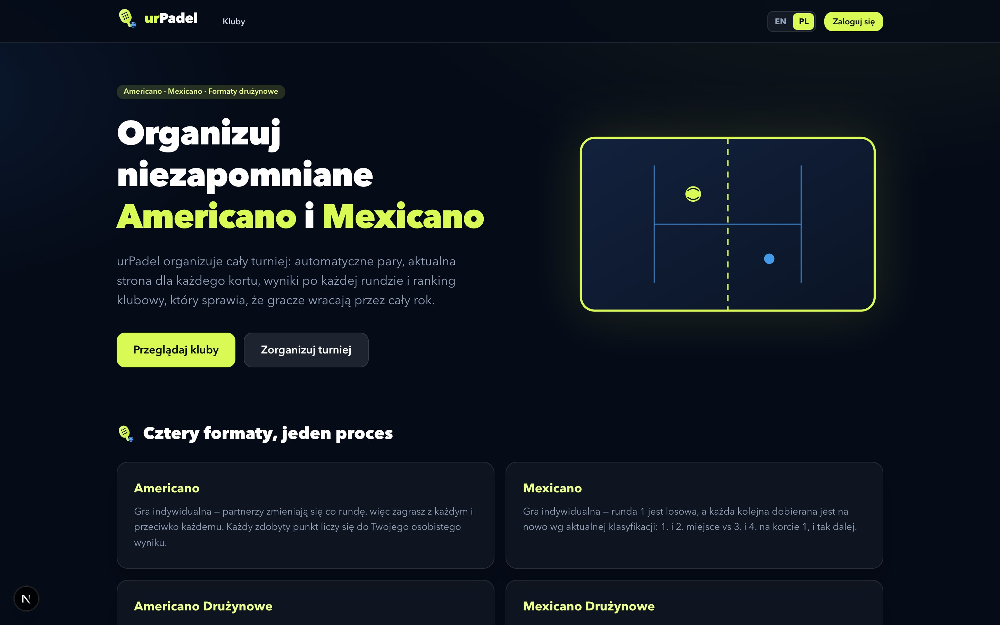
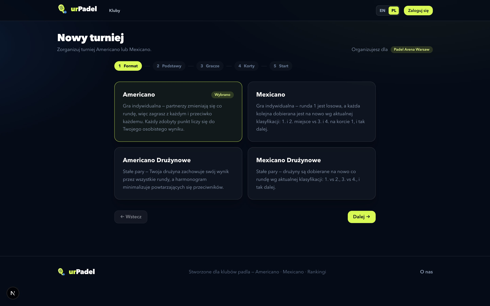
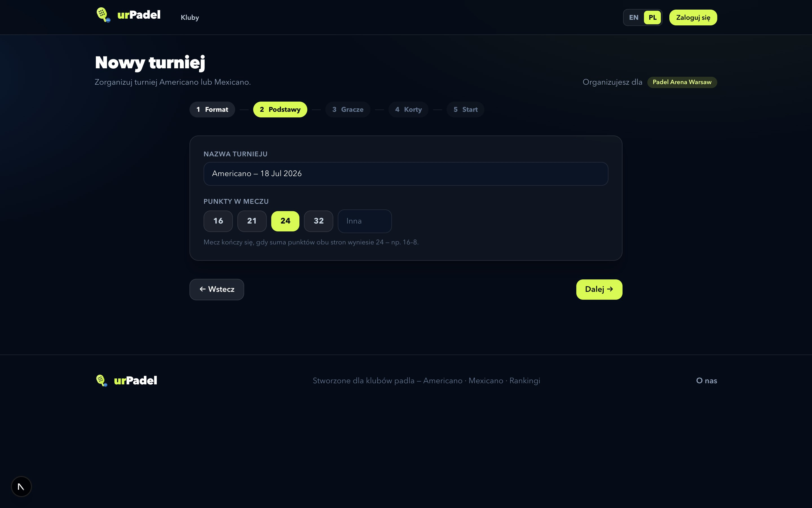
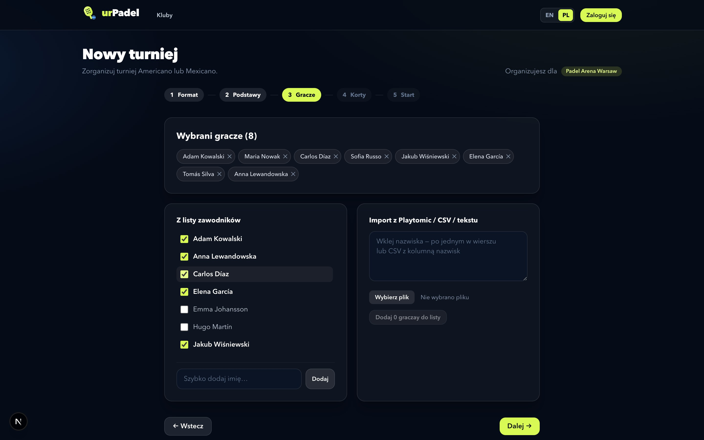
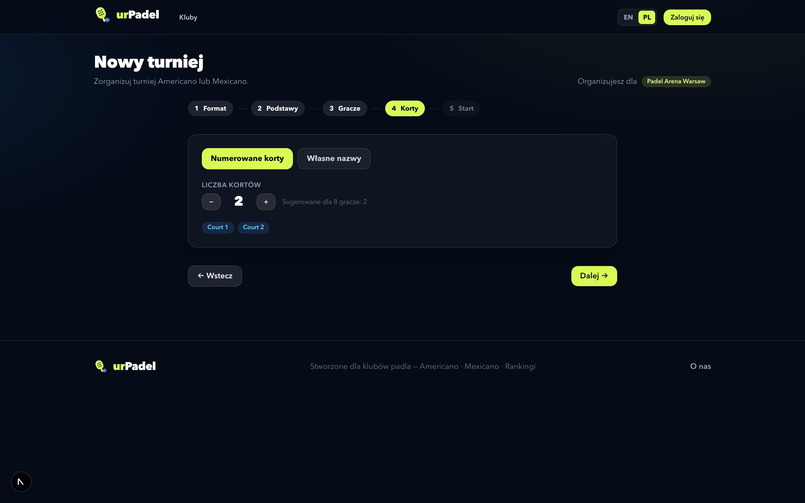
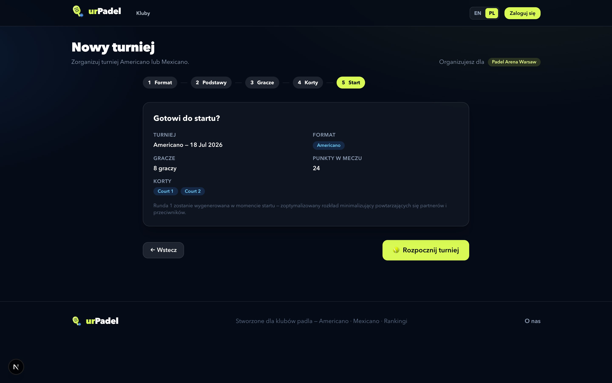
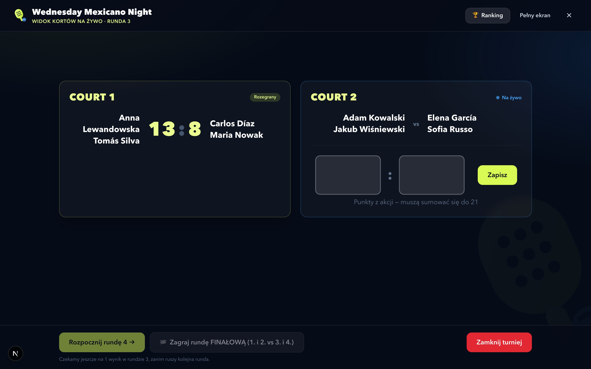

urPadel
Organizuj niezapomniane turnieje Americano i Mexicano
Kompletna platforma do towarzyskich turniejów padla — automatyczne pary,
wyniki na żywo na każdym korcie i ranking klubowy, dzięki któremu gracze wracają przez cały rok.
ur-padel-ten.vercel.app
Autor: Michał Ignaczak · m.ignaczak.92@gmail.com
Jedna platforma, cały turniej
Wszystko, czego potrzebuje turniej padla — w jednym miejscu
Kluby organizują, gracze wpisują wyniki, ranking aktualizuje się sam. Cztery
formaty turniejowe, inteligentny silnik par i publiczna strona każdego klubu, turnieju i kortu.

Cztery formaty, jeden proces
Americano, Mexicano i ich warianty drużynowe — każdy zdobyty punkt liczy się do wyniku
indywidualnego (lub drużynowego), a najwyższa suma wygrywa turniej.
Utwórz turniej w kilka minut
Pięć kroków, które poprowadzi każdy

1Wybierz format
Americano, Mexicano, Americano Drużynowe lub Mexicano Drużynowe — każdy opisany
bezpośrednio na karcie.

2Nazwij i ustaw punkty
21, 24, 32 lub dowolna własna liczba punktów w meczu — z podglądem tego, jak może
wyglądać końcowy wynik.
Utwórz turniej w kilka minut
Gracze w kilka sekund — prosto z Playtomic
Zaznacz graczy z listy klubu, dodaj nazwisko ręcznie albo wklej / wgraj eksport
z Playtomic, plik CSV lub zwykłą listę — wiersze nagłówkowe i duplikaty są rozpoznawane
automatycznie. Formaty drużynowe dodają kreator par z losowaniem jednym kliknięciem.

3Wybierz i zaimportuj graczy
Lista wybranych pokazuje liczbę graczy na żywo i ostrzega o nierównych grupach — pauzy
rotują sprawiedliwie, więc zadziała każda liczba uczestników.
Utwórz turniej w kilka minut
Korty, podsumowanie — gramy

4Wybierz korty
Numerowane korty z inteligentną podpowiedzią albo własne nazwy, np. „Kort Centralny”
i „Panorama”.

5Podsumuj i wystartuj
Runda 1 generuje się w momencie startu — zoptymalizowany rozkład minimalizujący
powtarzających się partnerów i przeciwników (Mexicano zaczyna od losowania).
Prowadź na żywo
Jeden wielki ekran na całą rundę
Pełnoekranowy widok kortów stworzony na telewizor lub laptop w klubie: wszystkie
korty z wielkimi polami wyników, sterowanie rundami i podręczny ranking — nic więcej na ekranie.

Pełnoekranowy widok kortów
Rozegrane mecze świecą na limonkowo, trwające pulsują na niebiesko. Runda finałowa
dobierana jest wg klasyfikacji: 1. i 2. vs 3. i 4.
Pod maską
Nowoczesny, produkcyjny stack
Next.js 15App Router z React Server Components — każda strona renderowana świeżo na serwerze, API i interfejs w jednym kodzie.
React 19 + TypeScriptŚcisły TypeScript od silnika turniejowego po każdy ekran.
Tailwind CSS v4Autorski system projektowy granat–limonka: jeden wygląd stron publicznych, paneli i widoku kortów.
ClerkBezpieczne uwierzytelnianie z rolami — super admini, menedżerowie klubów, gracze — po polsku i angielsku.
MongoDB Atlas + MongooseChmurowa baza danych: kluby, zawodnicy, turnieje z pełną historią rund, rankingi i dziennik aktywności.
VercelWdrożenie globalne w sieci Vercel — aplikacja, o której czytasz, działa właśnie teraz.
Zbudowane, by mu ufać
Silnik par walidowany automatycznymi symulacjami (idealna rotacja partnerów, sprawiedliwe
pauzy, poprawne dobieranie Mexicano) · przepływy interfejsu weryfikowane automatyzacją przeglądarki
Playwright — to ona wykonała zrzuty ekranu w tym dokumencie · zależności załatane zgodnie
z najnowszymi biuletynami bezpieczeństwa (m.in. CVE-2025-66478) · każda zmiana sprawdzana pod
kątem uprawnień i zapisywana w dzienniku aktywności.
Gotowi poprowadzić swój turniej?
Otwórz aplikację, obejrzyj klub demo albo załóż własny klub w kilka minut.
https://ur-padel-ten.vercel.app